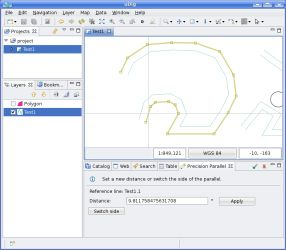

Figura 1. Seleccionando la Herramienta Paralela.
Seleccionar el feature de referencia.

Figura 2. Seleccionando el feature de referencia.
Una vez que se haya seleccionado el feature de referencia, establecer la distancia haciendo click cerca de un segmento. Al hacer esto, la herramienta encuentra el segmento más cercano y calcula la distancia, además de si la línea paralela estará en el exterior o interior del feature de referencia. Tras esto, la paralela se dibujará como se muestra en la Figura 3.

{kind=link}
Figura 3. Estableciendo la distancia y dibujando la línea paralela.
Cuando la línea paralela haya sido dibujada, el usuario puede cambiar la distancia entre el feature de referencia y la línea paralela. Para hacer esto, se debe establecer la nueva distancia en el cuadro de texto y hacer click en el botón Aplicar.

Figura 4. Cambiar la distancia.
Si el usuario desea cambiar la posición de la línea paralela (interior o exterior del feature de referencia) necesita hacer click en el botón de Cambiar de lado.

Figura 5. Cambiando de lado.
Cuando el usuario haya finalizado de establecer la línea paralela y quiera añadirla a la capa, puede hacerlo mediante un doble click en el mapa o haciendo click en el botón Aceptar situado en la barra de herramientas de la Vista. Además si desea descartar los cambios y volver a empezar con otro feature de referencia, puede hacer click en el botón Cancelar situado junto al botón Aceptar.

Figura 6. Añadir la línea paralela a la capa.